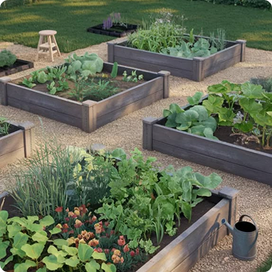
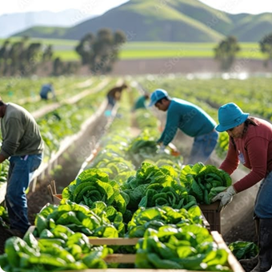
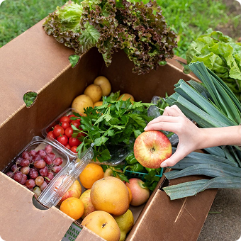
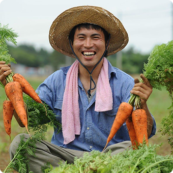
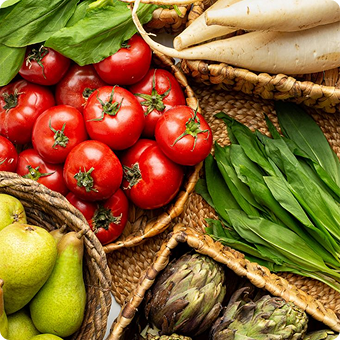

Свежий путь: наша история
Как мы решили вернуть вкус настоящей еды

Мы начинали с одной грядки
Идея «Свежего пути» родилась из простого вопроса: почему в магазинах овощи выглядят красиво, но совершенно безвкусные? Мы поняли, что проблема — в долгом пути от поля до прилавка. Так появилась мечта создавать короткий путь: от фермера сразу к вам. Первые заказы мы собирали вручную, с одной небольшой фермы. Сегодня мы работаем с десятками хозяйств, но принцип остался тем же — честно и свежо.
С 2020 года мы выращиваем более 5000 семей

Вернуть вкус детства
Мы верим, что еда должна быть не только полезной, но и вкусной. Наша миссия — сделать фермерские продукты доступными для каждого горожанина. Мы убираем посредников, чтобы вы получали продукты по честной цене и в идеальном состоянии. Мы не просто продаём еду — мы поддерживаем местных производителей и заботимся о здоровье вашей семьи.
Без посредников и перекупщиков

От грядки до вашей кухни — один день
Утром фермеры собирают урожай, днём мы формируем заказы, а вечером или на следующее утро курьер привозит всё к вашей двери. Никаких складов длительного хранения, никакой заморозки. Только свежие продукты, которые ещё вчера росли на земле.
Доставка за 24 часа

Люди, которым вы доверяете
Мы лично знакомы с каждым нашим фермером. Это семьи, которые годами работают на своей земле и любят своё дело. Мы проверяем условия содержания животных, отсутствие химии и качество почвы. Вы всегда можете увидеть, кто вырастил ваш продукт — на сайте мы указываем имя и ферму.
Более 30 проверенных хозяйств

Мы отвечаем за качество
Если вам попалось что-то не свежее — мы вернём деньги или заменим товар. Мы уверены в своей продукции, потому что контролируем каждый этап: от посева до доставки. Ваше доверие — наша главная награда.
100% гарантия свежести